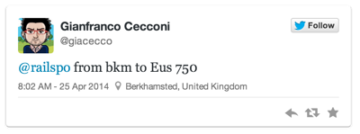
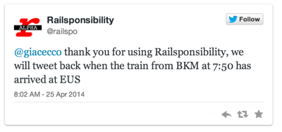
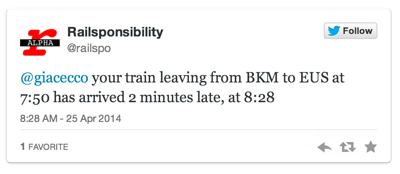

|
Dear All, Railsponsibility is currently offline, while checking a few issues we've had with the source data feed from Network Rail. You are welcome to get in touch and offer your help as usual. Be patient, Railsponsibility is coming back. |
|  |
Use any Twitter client of your choice to tell Railsponsibility that you are on a train that may be delayed. Find the "CRS code" for your station here. In the future, Railsponsibility will be able to guess the code from whatever you will prefer writing, like "London Euston", or "Euston".
You don't need to know the exact time specified in the timetable for the train's departure. Railsponsibility will find the first train leaving on or after the time you write. In the example, it was actually 7:50. |
|  |
Almost immediately, you will get an acknowledgement back. If you don't, something is wrong, perhaps you forgot to write "from" or "to"? |
|  |
When the train arrives at the station you specified, you will get another tweet. If you don't... well we are still in alpha stage, software can fail. For the time being, we don't support cancellations. |
| T H E F U T U R E |
If entitled to, you will get a link to download the delay repay form you need to send to your train operating company. It will be pre-filled with the required information about the delay, so that you just need to attach a copy of the ticket and send (some want email, some post). Unless you opt-out, the form will be pre-filled to send the compensation vouchers not to you, but to your favourite charity of choice. The Twitter account of the train operating company will be CC'ed, so they can't pretend they don't know you are angry! Full information about all delayed trains for each day will be available to download as open data in CSV format, for anybody to play with it, calculate statistics etc.. If you prefer not to use Twitter, other channels to use the service will be available, such as email or dedicated mobile apps. And this is just the beginning... |
|
Railsponsibility is a non-profit project by Digital Contraptions Imaginarium Ltd.. Full information, including the licensing for the data used to provide the service, is available here. |
|